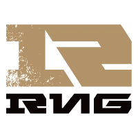
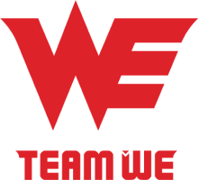

EDWARD GAMING
ROYAL NEVER GIVE UP
TEAM WE
La LPL est la région la plus forte parmi celles qui n'ont jamais gagné un Mondial. À deux reprises, en 2013 et 2014, la Chine s'est hissée jusqu'en finale, avec notamment Royal Club et son carry AD Uzi ; les Chinois auront forcément à cœur de faire mieux cette année devant leur propre public. La méta et la stratégie générale ne les intéressent pas. Les équipes chinoises aiment combattre, elles aiment les longues séries de 5 manches et, pour elles, une partie n'est jamais finie tant qu'un Nexus n'a pas explosé. La LPL a battu les Coréens de la LCK lors des Rift Rivals, mais elle n'a fêté ce résultat que de façon discrète, car les joueurs savaient qu'il leur fallait encore confirmer cet exploit sur la scène du Mondial.